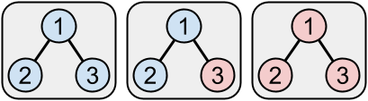
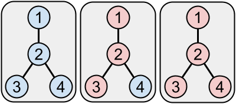
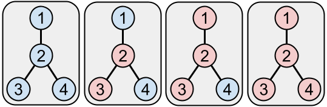

Ueli and Vreni are playing a game. The game's board is a tree with $$$\mathbf{N}$$$ vertices, all initially colored blue. They alternate turns, with Ueli going first. In each turn, a player must choose a blue vertex, together with any subset (possibly none or all) of its blue neighbors, and color all those vertices red. If at the start of a players' turn, all vertices are red, then that player loses the game and the other player wins the game.
In the example game below, Ueli colored vertex $$$3$$$ red in their first turn. Then, Vreni chose vertex $$$2$$$ for their turn and colored both it and its neighbor (vertex $$$1$$$) red. Because all vertices are now red, Ueli loses and Vreni wins.

Ueli and Vreni have noticed that it is much easier for Ueli to win this game because he has the first turn. Therefore they have adopted the following procedure: first, Ueli chooses an integer $$$\mathbf{N}$$$. Then, Vreni chooses any tree with $$$\mathbf{N}$$$ vertices. And then they start playing as described above, with Ueli taking the first turn.
Vreni is hopeful that being able to choose the tree can help her overcome the disadvantage of going second. Can you demonstrate how Vreni can win games in this setup?
This is an interactive problem. You should make sure you have read the information in the Interactive Problems section of our FAQ.
Initially, your program should read a single line containing an integer, $$$\mathbf{T}$$$, the number of test cases. Then, $$$\mathbf{T}$$$ test cases must be processed.
For each test case, your program must first read a line containing a single integer $$$\mathbf{N}$$$, the number of vertices that Ueli has chosen. Then, your program must output $$$\mathbf{N}-1$$$ lines describing the edges of the tree Vreni should choose. The nodes of the tree are numbered $$$1$$$ through $$$\mathbf{N}$$$. Each line must represent a distinct edge of the tree with $$$2$$$ integers between $$$1$$$ and $$$\mathbf{N}$$$: the two vertices the edge connects. The edges must represent a tree. The two integers within a line may be in either order, and the $$$\mathbf{N}-1$$$ lines themselves may be in any order.
After that, your program must read a line containing a single integer $$$\mathbf{M}$$$, the number of games that you need to play on this tree. These games are played independently; in other words, all vertices of the tree are blue at the start of each game.
For each of the $$$\mathbf{M}$$$ games, you need to process some number of exchanges until the game is over. Each exchange consists of a turn from each player.
For each exchange, your program must read two lines describing Ueli's turn first. The first of those lines will contain an integer $$$\mathbf{K}$$$, denoting the number of blue vertices to be colored red. The second of those lines will contain $$$\mathbf{K}$$$ distinct integers $$$\mathbf{A_1}, \mathbf{A_2}, \dots, \mathbf{A_K}$$$ describing the blue vertices to be colored red. $$$\mathbf{K}$$$ will be at least 1, and each $$$\mathbf{A_i}$$$ will be between 1 and $$$\mathbf{N}$$$, inclusive. Vertices $$$\mathbf{A_2}, \mathbf{A_3}, \dots, \mathbf{A_K}$$$ will all be neighbors of vertex $$$\mathbf{A_1}$$$.
After that, your program must output Vreni's choice for their turn in the same format: the first line with the number of blue vertices to be colored red, followed by the second line with the numbers of those vertices, in such an order that all vertices except the first one are neighbors of the first one.
If all vertices are red after Vreni's turn, it means that Vreni has won and this game is over. The next game starts immediately if there is one. If this was the last game for this test case, then the next test case starts immediately if there is one. If this was the last test case, the judge will send no further input to your program, and the program must send no further output.
On the other hand, if all vertices are red after Ueli's move, it means that Vreni has lost and therefore your program did not pass the test case. In this case, instead of starting a new exchange by printing the last move that colors all remaining blue vertices red, the judge will print a single number $$$-1$$$ and will not print any further output, and will not process any further games or test cases.
If the judge receives an invalidly formatted or invalid line (like outputting an unexpected number of integers, or integers out of range, or outputting a set of edges that do not form a tree, or trying to color a vertex that is already red, or trying to color a vertex that is not a neighbor of the first vertex colored in this turn) from your program at any moment, the judge will also print a single number $$$-1$$$ and will not print any further output. If your program continues to wait for the judge after receiving a $$$-1$$$, your program will time out, resulting in a Time Limit Exceeded error. Notice that it is your responsibility to have your program exit in time to receive a Wrong Answer judgment instead of a Time Limit Exceeded error. As usual, if the memory limit is exceeded, or your program gets a runtime error, you will receive the appropriate judgment.
The judge is deterministic. In other words, if you make two attempts that print the same numbers, you will get the same inputs from the judge. However, of course the judge can make different moves in different games on the same tree.
Time limit: 60 seconds.
Memory limit: 1 GB.
$$$1 \le \mathbf{M} \le 50$$$.
$$$\mathbf{T}=1$$$.
$$$\mathbf{N}=30$$$.
$$$1 \le \mathbf{T} \le 10$$$.
$$$31 \le \mathbf{N} \le 40$$$.
No two test cases use the same value of $$$\mathbf{N}$$$.
You can use this testing tool to test locally or on our platform. To test locally, you will need to run the tool in parallel with your code; you can use our interactive runner for that. For more information, read the instructions in comments in that file, and also check out the Interactive Problems section of the FAQ.
Instructions for the testing tool are included in comments within the tool. We encourage you to add your own test cases. Please be advised that although the testing tool is intended to simulate the judging system, it is NOT the real judging system and might behave differently. If your code passes the testing tool but fails the real judge, please check the Coding section of the FAQ to make sure that you are using the same compiler as us.
Note that the testing tool just makes random choices for Ueli unless it can win in one turn. Therefore, it might be easier to win against the testing tool than against the real judge, which will try harder to win.
2
3
1 2 1 3
1
1 3
2 1 2
4
1 2 2 3 2 4
2
3 2 1 3
1 4
2 2 3
1 1
-1
Note that the sample interaction does not satisfy the constraints of either test set, as its $$$\mathbf{N}$$$ values are too small. It is only presented to clarify the input and output format.
Below is an illustration of Case #2, Game #1 at the beginning and after each turn:

Below is an illustration of Case #2, Game #2 at the beginning and after each turn:
